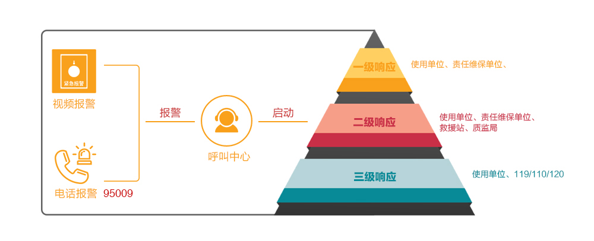
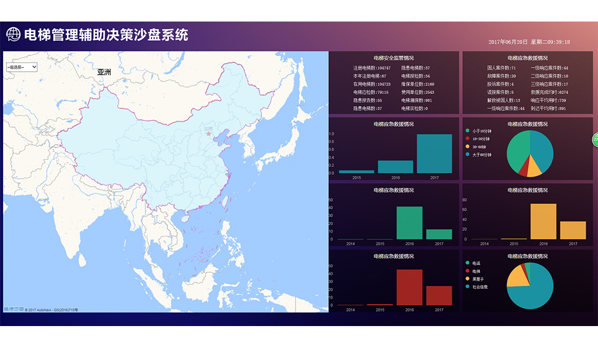
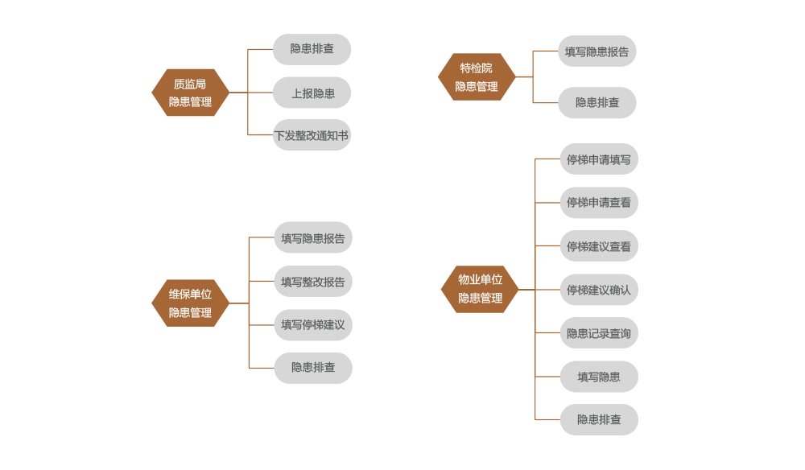
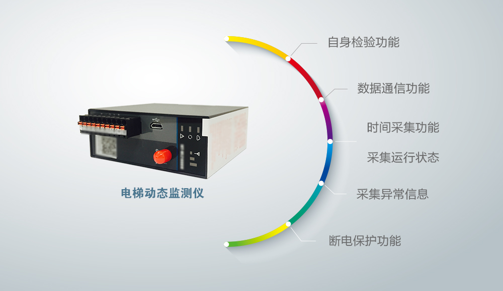

电梯应急救援解决方案
中质信联是利用云计算、大数据、物联网、移动通信等技术建立的电梯应急处置服务平台，由统一的电梯信息化管理体系和科学的三级立体救援体系构成。当电梯紧急事故发生时，应急处置平台能够结合电子地图对电梯、救援维保点实施快速定位，并对现场进行实时的视频对话安抚，合理调用应急救援人员，达到对电梯困人事故的快速反应，并实现电梯应急救援数据的集中管理和分析。
沙盘决策支持解决方案
随着数字化技术的发展，沙盘的表现形式、功能也不断地变化。
中质信联沙盘系统结合投影技术，融艺术性、演示性、知识性为一体，生动形象。使用者可通过点击该系统触摸屏上的相应选项，俯瞰所辖电梯全局，同时与沙盘进行互动，全方位、多角度、立体了解事物全貌及运行规律。
质监局：通过系统地图，工作人员可以任意选择浏览、查询所辖区物业、维保单位电梯管理的各种数据信息，加强监管；
特检院：对服务范围内电梯的安全检验信息进行管理，跟踪检验时间、检验结果。
生产企业：可以利用系统随时查看该企业生产电梯的分布、使用情况，跟踪电梯故障、维修时间及次数，提高电梯质量。
数据统计：将各类信息用报表、图表、统计图等方式展示，严密分析并得出结果，为领导决策提供技术支持。
电梯运维管理解决方案
电梯维保是保证电梯使用安全的重要环节，它贯穿于电梯使用的全过程，并直接关系到电梯的使用寿命。据调查数据显示，在各类电梯事故中有90%是由于维修保养不善、管理不到位造成的。当前，我国有电梯制造厂家和配件厂近300家，从事电梯安装、改造、维修保养的单位有几千家，从业人员几十万。为了在有限的市场中分得一杯羹，各维修保养单位尽显其能、抢夺资源，造成了维保市场混乱、维保质量低劣，直接影响了电梯的安全运行。规范电梯维保市场、确保有序竞争已经是必须解决的一个难题。
中质信联研发的电梯运维管理系统采用了多种先进的技术手段、智能设备及数据处理技术，帮助物业单位、维保单位及政府部门实现电梯维保信息化管理，实施有效监督，建立阳光运维体系，切实保证维保质量。
隐患排查治理解决方案
为防止和减少电梯事故，强化各单位主体责任，保障大众乘梯安全，中质信联开发了严密的隐患排查治理系统。
物业、维保、特检院、质监局、社会大众等各方力量共同发现、监督电梯安全隐患，并通过系统及时上报、处置，详细记录每次事故隐患排查数据，形成信息闭环管理，有力地强化了电梯安全隐患排查治理全过程的监管。
物业、维保单位：发现电梯安全隐患后，可使用该系统记录电梯安全隐患发现、整改、验收等环节数据，实现电梯隐患自查自报；
质监局：针对上报的电梯安全隐患信息，可及时处置，便于监督管理；
社会大众：在日常乘坐电梯时，可以对电梯出现的隐患问题进行投诉和报警。
电梯动态监测解决方案
近年来，电梯作为一种普遍的、关乎大众生命安全的特种设备，随着市场保有量的激增，其安全运行越来越受到社会的关注。然而，现有检验人员却远远无法满足电梯故障处理、维保的需求，安全部件失灵、电梯漏检、疏于维护等现象时有发生，再加上现有监管体制不健全、维护工作不到位，单位救援和维修记录内容不统一，不规范，不利于统一管理、综合分析解决问题，加强各单位对电梯信息的整合和监管，通过技术手段，利用信息化系统来提高电梯安全监测已是必然趋势。
中质信联电梯动态监测系统是一款用于实时监控电梯运行状态的系统。可用于小区、学校、医院、商厦、政府机关、各类企业物业、维保的集中监控，动态检测仪与电梯绑定，实时记录电梯运行数据，便于分析决策，加强电梯安全监管。
实时监控
系统可以采集电梯日常运行速度、时间等正常信息储存至大数据，方便日后调取查找并解决问题。
异常反馈
如发现异常信息自动推送给维保人员或呼叫中心，确认现场情况并进行维修；将异常信息记录至大数据，做到电梯事故的有效预防。
自动预警
当电梯在运行过程中出现急停、困人、冲顶、蹲底等故障的时候，系统会自动预警，报告给应急处置中心，快速地展开救援和检修；电梯故障信息储存，以备日后统计查验。
断电保护
停电后，系统不少于2小时的UPS能力，可为电梯运行监控提供断电保护，保证电梯运行数据的完整性。
